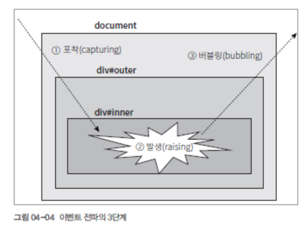

HTML 이벤트 전파 3단계
1단계는 (capturing)
문서 내의 요소에서 이벤트가 발생했을 때 HTML 문서 밖에서부터 이벤트를 발생시킨
HTML 요소까지 포착해 들어가는 이벤트 포착 단계다.
2 단계는 (raising)
이벤트를 발생시킨 요소에 다다르면 요소의 이벤트에 연결된 함수를 직접 호출시키는 이벤트 발생.
3 단계는 (bubbling)
이벤트가 발생한 요소로부터 상위 요소로 거슬러 올라가면서 동일한 이벤트를 호출시키는 버블링 단계.